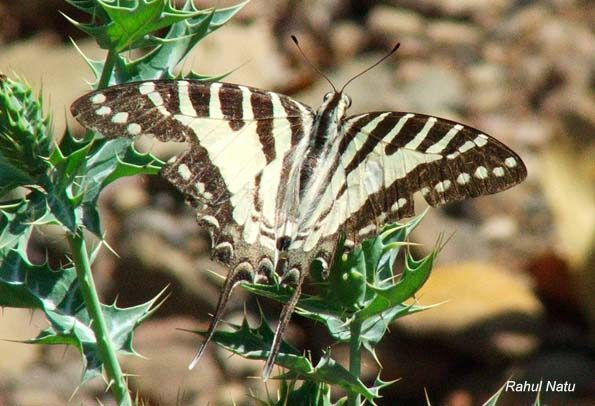

स्पॉट स्वोर्डटेल तितलीSpot Swordtail
Graphium nomius · Papilionidae · INS-0304

- Scientific name वैज्ञानिक नाम
- Graphium nomius (Esper, 1798)
- Family कुल
- Papilionidae
- Hindi हिंदी
- स्पॉट स्वोर्डटेल तितली
- Local names स्थानीय नाम
- spot swordtail, spot swordtail titli
- Status here यहाँ की स्थिति
- native
- Movement आवागमन
- Resident, here all year
- Known from कहाँ दर्ज
- Others have published records from the wider Awadh–Purvanchal plain, none yet from Basti–Ayodhya अवध–पूर्वांचल से दूसरों के प्रकाशित अभिलेख, बस्ती–अयोध्या से अभी नहीं
- IUCN IUCN
- not evaluated
- Review समीक्षा
- not yet reviewed
When to look कब देखें
Present all year. साल भर मौजूद।
Tell it apart from इनसे अलग पहचानें
स्पॉट स्वोर्डटेल तितली / Spot Swordtail
Graphium nomius (Esper, 1798) — Papilionidae
स्पॉट स्वोर्डटेल तितली — यह एक नीलाभ-सफेद स्वेलोटेल तितली है जिसके अगले पंखों पर पाँच चौड़ी काली पट्टियाँ और पिछले पंखों पर लंबी काली पूँछ होती है। इसके निचले हिस्से पर पिछली ओर लाल धब्बों की एक कतार होती है। इसके नर अक्सर गीली जमीन या गड्ढों के पास झुंड में इकट्ठा होते हैं और फूलों पर भी आते हैं।
Quick Identification त्वरित पहचान
| Feature | Description |
|---|---|
| Wingspan | 75–90 mm (Talbot 1939, p. 208) |
| Upperside ground | Bluish-white (Talbot 1939, p. 207; Bingham 1907, p. 101) |
| Forewing bands | Five broad black bands; fourth band ends on median vein; broad black marginal band occupying about one-third of wing width with a submarginal series of rounded anterior spots (Talbot 1939, pp. 207–208) |
| Hindwing | Subbasal and inner discal black bands, broad marginal band with slender whitish lunules, and a black tail edged and tipped with white (Talbot 1939, p. 208) |
| Hindwing key mark | Second pale rounded spot from apex on broad dark margin is out of line (Evans 1932, p. 54) |
| Underside | White with bronze-brown markings; hindwing inner discal band bordered by a series of red spots outwardly edged with black (Talbot 1939, p. 208) |
Field tip: Look for males congregating in crowds at puddles and visiting flowers in the lowlands (Talbot 1939, p. 207).
हिंदी: इसके पंखों का फैलाव 75 से 90 मिमी होता है। नीले-सफेद पंखों पर काली पट्टियाँ, लंबी काली पूँछ और निचली सतह पर लाल धब्बों की कतार इसकी मुख्य पहचान हैं।
Morphology आकारिकी
Biometrics (nominate subspecies):
| Measurement | Range | Source |
|---|---|---|
| Expanse | 75–90 mm | Talbot (1939, p. 208) |
Talbot (1939, pp. 207–208) describes Graphium nomius nomius: "Upperside bluish-white. Fore wing crossed by five broad black bands; the basal and subbasal bands reach the inner margin, the discal band is generally extended into area 2, the fourth band ends on the median vein, the fifth extends from the costa on both sides of the discocellulars and terminates at lower angle of cell; beyond the fifth band is a short macular transverse bar of the ground-colour that terminates on vein 5, followed by a very broad black marginal band that occupies about one-third of the width of the wing and is traversed by a submarginal series of small spots of the ground-colour, of which the anterior ones are rounded, the others semi-lunate. Hind wing with the ground-colour whitish along the inner margin and above vein 7; a streak along the inner margin, a subbasal and an inner discal transverse band from costa across cell, and a very broad marginal band, black; the former two joined near the tornus by transverse lunular black marks, the marginal band traversed by a series of slender whitish lunules; a small black spot in area 1 above tornus and another at base of area 4, the black at the apices of areas 2 to 4 and the lunules thereon suffused with grey; tail black, edged and tipped with white."
"Underside white, with the black markings similar to above but bronze-brown, with the following exceptions:— Fore wing with the parts of the basal, subbasal, and discal bands extended below the cell black, also the inner portion below vein 4 of the marginal band. Hind wing with the inner discal band broken, irregular and black, and bordered by a series of red spots outwardly edged with black; the submarginal whitish lunules are broadly edged on the outer side with black; anal area ochraceous-grey. Antennae black; head, thorax, and abdomen creamy-white, with a medial broad longitudinal stripe; beneath, the abdomen with lateral black stripes." (Talbot 1939, p. 208).
Larval Stage
Talbot (1939, p. 207, citing Jordan) describes the larva: "The full-grown larva above usually black with white transverse stripes, beneath green, the anterior and posterior segments yellowish, sometimes the larva entirely green; on each of the thoracic segments and the anal segment a pair of spines."
Bingham (1907, pp. 102–103, citing Davidson & Aitken) also notes that the larva is somewhat quadrangular with small sharp spines, and the pupa is earthy-brown and attached in crevices or under stones or roots.
हिंदी: इसके पंखों का फैलाव लगभग 75 से 90 मिमी होता है। ऊपरी सतह नीली-सफेद होती है जिस पर काली पट्टियाँ और किनारे होते हैं, जबकि निचली सतह पर कांस्य-भूरे निशान और लाल धब्बे होते हैं।
Behaviour & Ecology व्यवहार और पारिस्थितिकी
Talbot (1939, p. 207) notes under Habits: "Common in the lowlands, sometimes abundant in certain places. The males often congregate in crowds at puddles; they also visit flowers."
हिंदी: टैलबोट (1939) के अनुसार यह निचले इलाकों में आम है और इसके नर अक्सर गड्ढों की गीली मिट्टी पर झुंड में इकट्ठा होते हैं तथा फूलों पर भी आते हैं।
Life Cycle / Phenology जीवन चक्र
Talbot (1939, p. 207, citing Jordan) notes on the pupa: "Not on the food-plant, but under stones, in crevices, and under the roots of trees; earth-coloured, with short thoracic horn directed forwards, and somewhat produced angles to the head. Pupal stage lasts in S. India from July to March or May." Phenology in eastern Uttar Pradesh is not available in consulted sources.
हिंदी: जॉर्डन (टैलबोट 1939 में उद्धृत) के अनुसार इसका प्यूपा पत्थरों के नीचे या दरारों में बनता है। पूर्वी उत्तर प्रदेश के लिए इसका मौसमी चक्र देखे गए स्रोतों में उपलब्ध नहीं है।
Host Plants or Prey आहार
Talbot (1939, p. 207, citing Jordan) records the larval food plants as: "On Saccopetalum tomentosum Hook. f., family Leguminosae, and Polyalthia longifolia Benth. & Hook. f., family Anonaceae." Adults visit flowers (Talbot 1939, p. 207).
हिंदी: जॉर्डन (टैलबोट 1939 में उद्धृत) के अनुसार इसकी इल्ली Saccopetalum tomentosum और अशोक (Polyalthia longifolia) के पत्तों को खाती है, और वयस्क फूलों का रस पीते हैं।
Predators / Natural Enemies शत्रु
Not available in consulted sources.
हिंदी: इसके प्राकृतिक शत्रुओं का विवरण देखे गए स्रोतों में उपलब्ध नहीं है।
Agricultural / Human Relevance कृषि प्रासंगिकता
Not available in consulted sources.
हिंदी: इसके कृषि या मानव महत्व का विवरण देखे गए स्रोतों में उपलब्ध नहीं है।
Expected Locally स्थानीय रूप से अपेक्षित
Not a field record. Written from published accounts for eastern Uttar Pradesh. No confirmed local sighting yet — if you have seen it, that is what the atlas needs.
अभी तक स्थानीय पुष्टि नहीं। यह विवरण प्रकाशित स्रोतों से है, किसी अवलोकन से नहीं।
In eastern Uttar Pradesh, adults may be looked for at damp puddles and flowers in lowland areas (Talbot 1939, p. 207). GBIF holds published records from the wider Awadh–Purvanchal plain, none yet from Basti–Ayodhya: four photographed records from Lakhimpur Kheri (June 2014, June 2025, March 2026 with coordinates uncertain by about 7 km, and June 2026), by four observers. A first local record would be a photograph showing the black-banded bluish-white wings and long tail with place and date, sent through the About page.
हिंदी: पूर्वी उत्तर प्रदेश में इसे निचले इलाकों में गड्ढों की गीली मिट्टी और फूलों के पास खोजा जा सकता है। जीबीआइएफ (GBIF) में लखीमपुर खीरी से चार अभिलेख हैं, पर बस्ती या अयोध्या से अभी कोई अभिलेख नहीं है।
Distribution वितरण
Global range: Talbot (1939, p. 207) gives: "Ceylon and Southern India to Sikkim, Assam, Burma, Tong-king, Siam, Annam, and Hainan."
In India: For the nominate subspecies, Talbot (1939, p. 208) gives "Ceylon, Southern India to the Sikkim lowlands".
Evans (1932, p. 54) similarly summarises its range from Ceylon and southern India to Sikkim.
In Uttar Pradesh: GBIF holds four photographed records from Lakhimpur Kheri (2014, 2025, and 2026, four observers).
In Basti district / eastern UP: GBIF holds no record from Basti or Ayodhya.
हिंदी: टैलबोट (1939) के अनुसार यह श्रीलंका और दक्षिण भारत से सिक्किम, असम, बर्मा और दक्षिण-पूर्व एशिया तक फैला है। उत्तर प्रदेश में जीबीआइएफ पर लखीमपुर खीरी के चार अभिलेख हैं, पर बस्ती और अयोध्या से कोई अभिलेख नहीं है।
Research Questions शोध प्रश्न
Anyone can investigate these | कोई भी इन प्रश्नों की जाँच कर सकता है
- Does Graphium nomius occur in Basti and Ayodhya districts, especially where Polyalthia longifolia is planted? / क्या बस्ती और अयोध्या में जहाँ अशोक (Polyalthia longifolia) लगा है, वहाँ यह तितली मिलती है?
- In which months do males gather at damp puddles in the wider Awadh plain? / अवध के मैदान में इसके नर किस महीने में गीली मिट्टी पर झुंड में दिखते हैं?
- Which garden or wild flowers do adults visit in northern Uttar Pradesh?
- How does the flight period in the Awadh plain compare with the records from Lakhimpur Kheri (March and June)?
- Can a child spot the long black tail with white edges and the five black bars across the forewing when the butterfly settles at a puddle? (No equipment needed.)
हिंदी: कोई भी व्यक्ति बिना किसी उपकरण के गीली मिट्टी पर बैठी इस तितली के पंखों की पाँच काली पट्टियों और लंबी पूँछ को देख सकता है।
Similar Species मिलती-जुलती प्रजातियाँ
| Species | How to tell apart | हिंदी |
|---|---|---|
| Common Jay (Graphium doson) | Upperside black, with slender pale green streaks in the cell, a discal band of pale green spots and a subterminal series of spots (Bingham 1907, pp. 106–107, as Papilio eurypylus race jason, with doson in its synonymy); Talbot's description (1939, p. 221) gives it no tail, whereas G. nomius has a "tail black, edged and tipped with white" (Talbot 1939, p. 208) | ऊपरी सतह काली, जिस पर हल्के हरे धब्बे और लकीरें; टैलबोट के विवरण में पूँछ का उल्लेख नहीं (कॉमन जे तितली) |
| Tailed Jay (Graphium agamemnon) | Upperside brownish-black with blue-green patches, those placed towards the base band-like and those below the forewing cell large and elliptical; hindwing with tail (Talbot 1939, p. 229) | ऊपरी सतह भूरी-काली जिस पर नीले-हरे धब्बे (टेल्ड जे तितली) |
Field rule: A bluish-white swallowtail with five broad black bars on the forewing, a long white-edged black tail, and a row of red spots on the hindwing underside is Graphium nomius (Talbot 1939, pp. 207–208).
हिंदी: नीले-सफेद पंखों पर पाँच काली पट्टियाँ, लंबी काली पूँछ और निचली सतह पर लाल धब्बों की कतार वाली तितली स्पॉट स्वोर्डटेल तितली है।
Taxonomy & Classification वर्गीकरण
Original description. Esper, E. J. C. (1785–1798), p. 210, pl. 52, fig. 3, in Papilio as nomius (cited in Talbot 1939, p. 207; Bingham 1907, p. 101; GBIF gives year 1798).
Subspecies. Talbot (1939, pp. 207–209) recognises two subspecies in the Indian area: the nominate subspecies (Ceylon, Southern India to the Sikkim lowlands) and G. n. swinhoei (Moore, 1878) (Assam to Southern Burma); neither range names the United Provinces.
Family and order placement. Order Lepidoptera, family Papilionidae, genus Graphium. Bingham (1907, p. 101) treated it in Papilio (as nomius), and Evans (1932, p. 54) in Pathysa (as nomius).
Phylogenetic notes. Placed in Graphium by Talbot (1939, p. 207) and GBIF, whereas earlier works placed it in Papilio or Pathysa.
IUCN status rationale. Not evaluated on the IUCN Red List.
हिंदी: इसका पहला वैज्ञानिक वर्णन एस्पर (1798) ने Papilio वंश में nomius के रूप में किया था। वर्तमान में इसे Graphium वंश और Papilionidae कुल में रखा जाता है।
Photo Gallery फोटो गैलरी
No photos yet — add field photos to media/species/spot_swordtail/ and run node scripts/sync_photos.js.
Photos needed आवश्यक फोटो
- [ ] Upperside showing the five black forewing bands and white-tipped black tail (ऊपरी सतह, काली पट्टियाँ और पूँछ दिखाता चित्र)
- [ ] Underside showing the red spots on the hindwing (पिछले पंख की निचली सतह के लाल धब्बे दिखाता चित्र)
References संदर्भ
- Esper, E. J. C. (1798), p. 210, pl. 52, fig. 3, as nomius (cited in Talbot 1939, p. 207; Bingham 1907, p. 101).
- Bingham, C. T. (1907). The Fauna of British India, including Ceylon and Burma. Butterflies. Vol. 2 (as nomius, pp. 101–103). Taylor and Francis, London.
- Evans, W. H. (1932). The Identification of Indian Butterflies (2nd ed., p. 54, as nomius). Bombay Natural History Society, Madras.
- Talbot, G. (1939). The Fauna of British India, including Ceylon and Burma. Butterflies. Vol. 1 (2nd ed., pp. 207–209). Taylor and Francis, London.
- GBIF Occurrence Data — Graphium nomius (Esper, 1798), India (2025).
Source file: species/fauna/insects/spot_swordtail.md